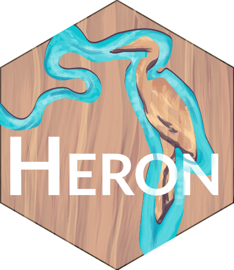

R Packages
I have increasingly worked on wrapping the functions that I write into R packages both for simplicity’s sake on my end as I reference my own work across different projects but also to (hopefully) help others who run into the same repetitive tasks that I have attempted to solve. Below are the packages I am an author on along with a brief description of their purpose and their hex logo. Additionally, I designed the hex logos for dndR, helpR, and scicomptools. Gabe De La Rosa designed the hex logos for lterpalettefinder and HERON, thanks Gabe!
lterpalettefinder
Extract Color Palettes from Photos and Pick Official LTER Palettes

This package allows users to extract colors (as hexadecimal codes) from a given image. These codes can then be used for the creation of graphics that have aesthetic connections to pictures relevant to the data (e.g., focal organism, study site, etc.). Secondarily, it also contains a set of official palettes that can be accessed if the user would prefer to use a pre-set palette rather than creating their own.
To allow non-R users to explore lterpalettefinder, I created an R Shiny app that allows anyone with an internet connection to use this package.
dndR
An R Package for Dungeons & Dragons

Perhaps unsurprisingly for someone of my professional interests, I am a huge Dungeons & Dragons () fan in my free time. To blend my personal and professional interests I’ve created this package to serve any other people in the R / DnD Venn Diagram intersection. It allows for easy rolling of dice, creation of character statistics, and (for GMs) encounter balancing. This package is also a fun chance for me to practice my coding skills in a risk-free environment.
To help showcase some of the functions in dndR I’ve created a standalone Quarto website that is similar to a vignette. Feel free to check it out!
supportR
Support Functions for Wrangling and Visualization

The unifying theme of this package is essentially that none of these functions have a strong connection anywhere else. This package is a grab bag of data wrangling, visualization, and exporting functions I’ve written and wanted to use across projects without copy/pasting the functions into all those different repositories. Hopefully some of them can be of value to you as well!
HERON
Helpers for River Observation

I developed this package in support of the LTER synthesis working group focusing on riverine silica exports. These functions are primarily focused on downstream (no pun intended!) operations for processing outputs created by the EGRET (CRAN link) and SiZer (CRAN link) R packages.
scicomptools
Tools Developed by NCEAS’ Scientific Computing Support Team

This package contains all of the standalone functions written by the NCEAS Scientific Computing Support Team that don’t cleanly fit in other repositories. This is similar in rationale to the helpR package but in this case, many of the functions were written by others and I have simply maintained them and improved them where the opportunity arises.